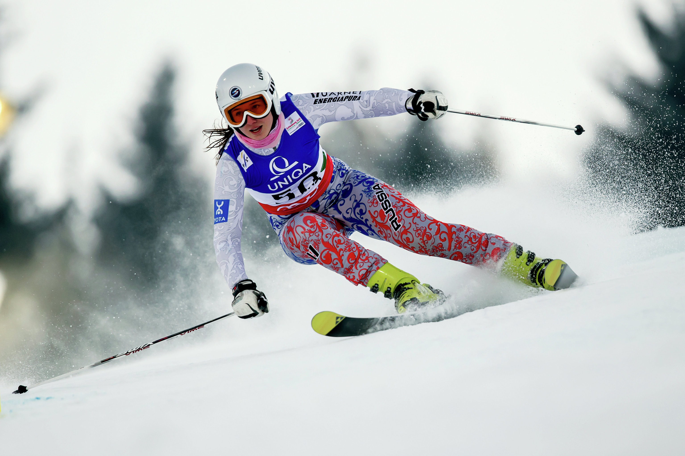

Яковлев Антон
Здорóвый óбраз жи́зни, ЗОЖ — образ жизни человека, направленный на сохранение здоровья, профилактику болезней и укрепление человеческого организма в целом. Здоровье человека на 60 % и более зависит от образа жизни.
Задумываться человека о здоровом образе жизни заставляет изменения в окружающей среде, работа, которая вызывает стрессы, новости, которые постоянно вещают о плохой политической ситуации и военных действиях в разных странах. Все это ухудшает состояние здоровья.
Мы рассмотрим каким образом каждый элемент здорового образа жизни влияет на человека и что необходимо делать для этого.
Чтобы больше понять зачем вести здоровый образ жизни, стоит понимать, как выглядит человек, который этого не делает.
Человек, который ведет здоровый образ жизни, выделяется в толпе. Но почему каждый человек не может постоянно заниматься улучшением своего самочувствия? Все связано с людьми, которые окружают человека. Например, если в семье не любят заниматься спортом, то ребенок будет отказывать от бега или занятием зарядки по утрам. Если вся нация любит питаться в кафе быстрого питания, которые расположены на каждом углу, то и один человек не будет противостоять этому. Такая ситуация складывается в Америке, когда людей проживающих в стране стали называть «нацией фастфудов». А что будет, если беременные женщины перестанут следить за своим здоровьем? Такая ситуация может привести к рождению целого поколения не здоровых малышей. Кроме того, стоит помнить о генетической наследственности. Ученые Маастрихтского университета доказали, что вредные привычки по отцовской линии передаются не только детям, но и внукам и правнукам. Это означает, что в семье будет расти поколение людей с вредными привычкамии плохим состоянием здоровья.
Ко всему этому добавляется работа в офисе, которая малоподвижная, а к определенному возрасту дает о себе знать в виде ожирения, нарушения опорно-двигательного аппарата и других болезней. Стрессы, которыми сопровождается рабочий день, приводят к нарушению работы нервной и сердечно-сосудистой системы.
С этими факторами человек может бороться самостоятельно, если в своей жизни найти место для ведения здорового образа жизни. Но есть моменты, на которые человек не может влиять, а они оказывают негативное воздействие на организм человека. К таким моментам можно отнести экологическое состояние окружающей среды. Загрязненные водоемы, выхлопные газы, повышенный радиационный фон и многое другое уменьшает жизнь человека на десятки лет. С каждым годом возрастает количество людей, которые заболевают раком. Частые головные боли, которые появляются у людей, живущих в мегаполисе связанные с высоким уровнем шумом. А сколько людей, причем молодых, страдает от изменений погодных условий? Сколько молодых людей умирает от болезней, которые раньше поражали только людей преклонного возраста? Можно сказать, что много....
Только человек способен изменить это или хотя бы снизить воздействия негативных факторов окружающей среды на свой организм. Для этого достаточно вести здоровый образ жизни.
Правильное питание предполагает, что в организм регулярно, в необходимом количестве и оптимальных соотношениях должны поступать многие питательные вещества — белки, углеводы, жиры, вода, минеральные вещества и витамины. Недостаток или избыток некоторых питательных элементов становятся причинами сначала временных неудобств, а затем и риска развития различных заболеваний.
Здоровое питание даeт возможность стабилизировать вес без насильственных ограничений, помогает избавиться от заболеваний и предотвратить их развитие, содействует восстановлению интеллектуальной и физической энергии. Здоровое питание — важная составляющая здорового образа жизни.
Чтобы правильно питаться, нужно не только желание, но и знания.
Занятия спортом помогают снять напряжение, которое возникает после тяжелой недели на работе. Кроме того, это помогает бороться со стрессом в дальнейшем. Занятия спортом — это разновидность стресса. Возможно, тебе покажется странным, что можно бороться со стрессом с помощью другого стресса. Но в этом есть смысл! Когда ты занимаешься спортом, повышается частота сердечного ритма и в организме происходят гормональные изменения. Физические нагрузки помогают нашему организму адаптироваться и быстрее справляться со стрессом.
Занятия спортом заряжают тебя энергией
Занятие спортом с утра — это лучший способ зарядиться энергией на весь оставшийся день. Конечно, у всех бывают дни, когда мы чувствуем себя слишком уставшим, чтобы заниматься спортом. И тренировка — это последнее, что ты хочешь. Но независимо от того, насколько ты устала после длинного рабочего дня или после напряженных выходных, тренировка поможет тебе почувствовать себя лучше. Скорее всего, ты испытаешь прилив энергии, которого тебе хватит до конца дня!
Яковлев Антон